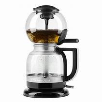

Product Name
Siphon Coffee Maker
Product Specifications
39- Feature 1:Unique Extraction Method: Utilizes vacuum pressure to brew coffee, which can result in a clean, bright, and flavorful cup of coffee with minimal bitterness
- Feature 2:Customizable Brew Time: Allows for control over brew time and water-to-coffee ratio, giving users the ability to experiment and fine-tune their brewing method
- Feature 3:Durability and Quality Materials: Often made with high-quality glass or stainless steel, ensuring durability and a premium feel